Location
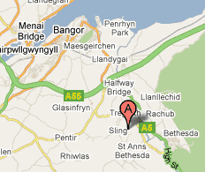The name of our cottage is Pant-y-lon, which translated means 'hollow in the lane'. It sits on a quiet Gwynedd hillside, 5 miles southeast of Bangor, above the village of Tregarth. It is well situated for enjoying both the mountains of Snowdonia and the lovely sandy beaches of Anglesey. It is 8 miles north of the summit of Snowdon and a 10mn drive to the Menai Bridge and onto Anglesey. The cottage sleeps 4 - 6 people. Pets are welcome.
There are many footpaths around Pant-y-lon. Walks from the cottage have backdrops of views over the Ogwen valley to the Carneddau mountains, over Bangor to Anglesey with Penmon point and Puffin Island off the coast of Anglesey (about 9 miles away).
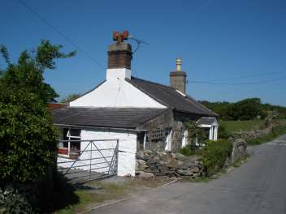 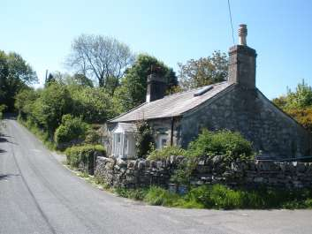
The Cottage
The cottage is a Grade II listed, traditional hillside cottage with many original features, whose stone walls are 18" thick in places. The cottage nestles in the sheltered dip on a quiet country lane scattered with cottages and farms. The cottage's garden is surrounded by a drystone wall which encloses a large lawn with table and chairs and an old apple tree. There is parking for two cars with the gate closed, or three with the gate open.
Apart from the kitchen and bathroom there are four rooms: lounge, two bedrooms and a crog loft. The largest room is the lounge with its high ceiling and open fireplace. The main bedroom has a double bed and the second a single bed. The crog-loft above the main bedroome stores two single mattresses which make a comfortable bed for one or two. In addition there is a bed settee in the lounge which can sleep two. We provide two double and three single duvets and pillows. Please provide any extra bedding needed for for the bed settee. Please bring duvet covers, pillow slips, towels and tea towels.
The cottage is well equipped for holiday visitors. Crockery and cutlery for six, saucepans and utensils, electric cooker, fridge, freezer, iron, kettle, washing machine, shower and television/ dvd player. There are electric fires as well as the open fire place. Electricity and coal are included in the rent.
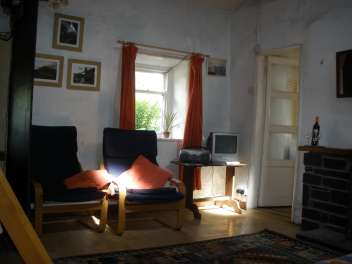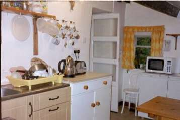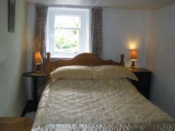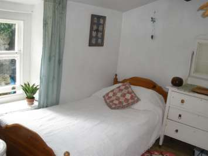
Price
The Cottage is rented out weekly during summer from June to September. There are no extras and pets are welcome. We require a deposit of £60 for each week booked. The balance is due six weeks before the starting date of the holiday and can be paid by cheque.
| Week beginning | Rent |
|---|---|
| 18 June 2010 | £310 |
| 25 June | £400 |
| 2 July | £440 |
| 9 July | £450 |
| 16 July | £460 |
| 23 July | £500 |
| 30 July | £500 |
| 6 August | £500 |
| 13 August | £500 |
| 20 August | £490 |
| 27 August | £470 |
| 3 September | £350 |
| 10 September | £330 |
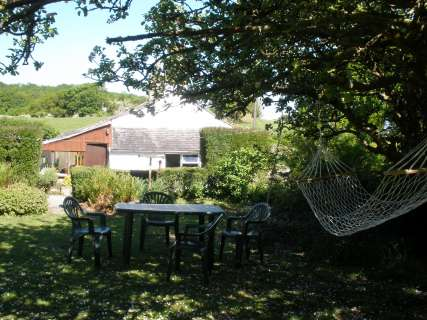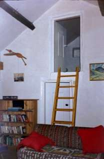
Local Views
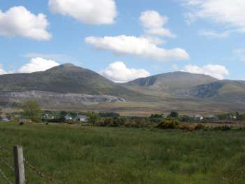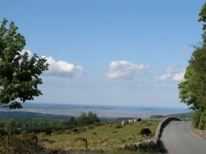
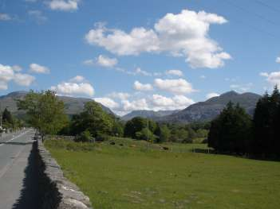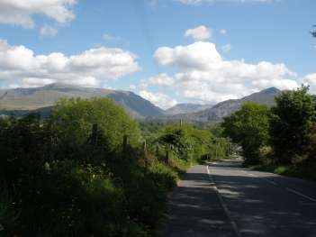
Contact
Local Facilities
Tregarth (1 mile) has a pub, a Post Office and a convenience shop. Bethesdsa (2 miles) has a much larger range of shops including a mini supermarket, cafe, restaurant and take away. Bangor (5 miles) has supermarkets and a number of restaurants. For information on some of the activities and places of interest in the area please look at the Gwynedd Council tourist website
Last updated 20/06/2015. Text Sarah Dodson. Design Andrew Dodson and Photographs by Matthew Dodson.